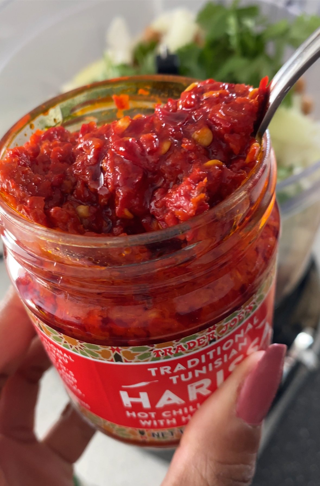
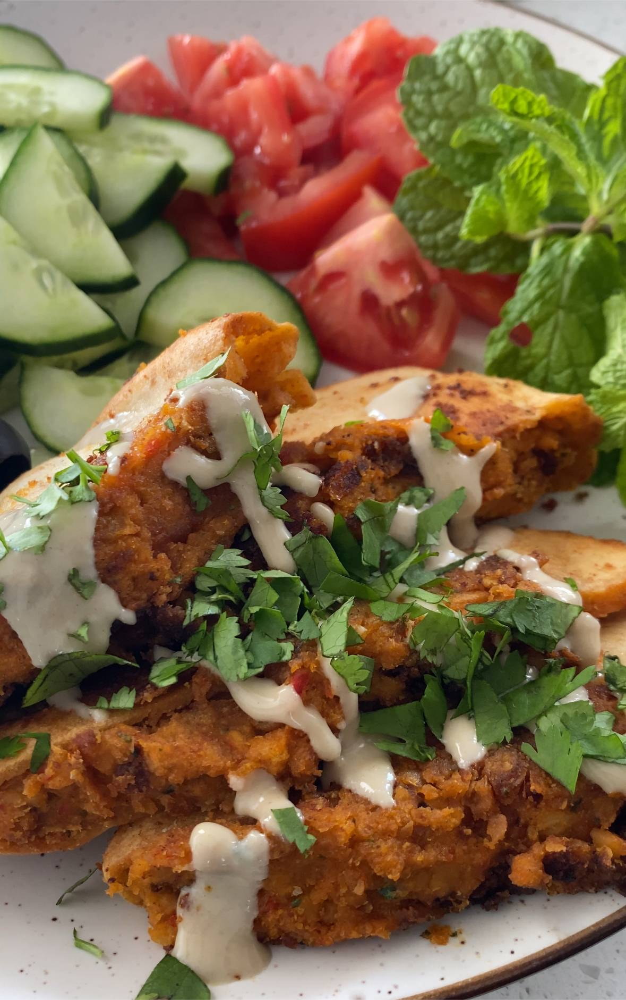

In the bowl of a large food processor, pulse together the chickpeas, onion, garlic, cilantro, parsley, harissa, spices, and 1/4 c of olive oil until it forms a paste. Taste the mixture and add more spices, salt, or pepper, to your preference.
Scoop the chickpea mixture into the pitas.
Pour the remaining 1/4 c of olive oil into a pan, and heat it on a medium flame. Working in batches, place the pitas chickpea-side down in the skillet, and cook for about 3 minutes or until the chickpea mixture browns.
Flip the pitas onto their sides and cook on both sides for about 3 minutes, until the pita bread gets crispy.
Meanwhile, preheat oven to 400 F. Spray a baking pan with non-stick spray.
Lay the pitas on the baking pan and bake for about 10 minutes, flipping them over once.
Serve each pita drizzled with tzatziki, tahini, and a sprinkle of cilantro and parsley.

INGREDIENTS
1/2 yellow onion, diced
4 garlic cloves, diced
1 bunch EACH cilantro and parsley, plus extra for garnish
Butter (sub: Earth Balance butter if vegan)
1-2 tbsp harissa paste (depending on your spice tolerance)
1 tsp EACH coriander and cumin
1/2 tsp salt and pepper
1/2 c olive oil, divided
4 large pitas, sliced in half*
2 cans of chickpeas
Tzatziki and tahini, for serving

How Long Do These Stuffed Pitas Take to Make?
There are four main steps to making this recipe:
Blend the ingredients in a food processor
Stuff each pita with the falafel mixture
Fry the stuffed pitas
Finish baking them in the oven
Start to finish, you can whip up these stuffed falafel pitas in about 35 minutes.